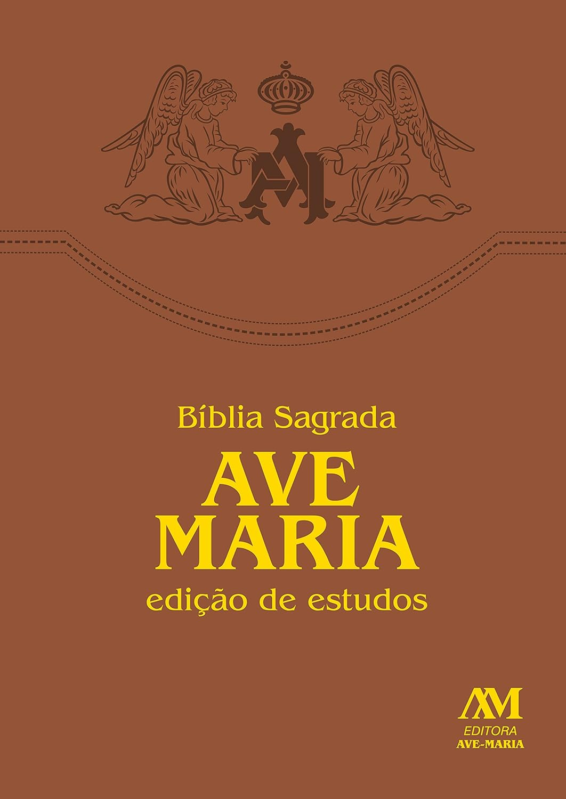
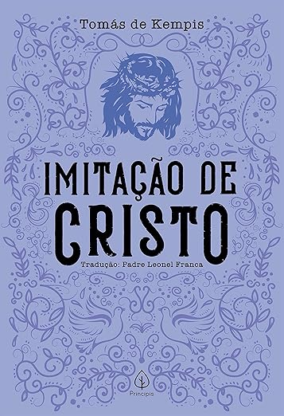

Resumo do livro:
A Bíblia Sagrada (Edição Ave Maria) é muito mais do que um registro histórico; é a pedra angular da espiritualidade
católica no Brasil, sendo a primeira tradução completa feita a partir dos idiomas originais a alcançar o coração do povo com uma linguagem
acessível, porém profundamente solene. A genialidade desta edição reside no equilíbrio perfeito entre o rigor teológico e uma clareza
pedagógica que torna a Palavra de Deus um diálogo vivo, capaz de guiar tanto o fiel em sua oração cotidiana quanto o estudioso em busca de
profundidade através de suas notas explicativas e ricas introduções. É uma obra de magnitude incomparável que funde poesia, profecia e sabedoria
em um único fôlego narrativo, onde cada livro — do Gênesis ao Apocalipse — se entrelaça para formar o mosaico definitivo da história da salvação.
Sua leitura não é apenas um exercício intelectual, mas um convite irresistível à contemplação e ao encontro pessoal com o sagrado, consolidando-se
como uma bússola infalível para o espírito humano e como o alicerce onde a tradição milenar da Igreja e a realidade do mundo moderno se encontram
em perfeita e eterna harmonia.

Resumo do livro:
Confissões de Santo Agostinho é uma obra-prima absoluta e atemporal que consegue ser, ao mesmo
tempo, um tratado filosófico denso e um diário íntimo escandalosamente honesto. A genialidade do livro reside na coragem de Agostinho
em expor suas crises existenciais, erros de juventude e a busca incessante por um sentido maior, criando uma ponte direta com qualquer
leitor moderno que já se sentiu perdido. É uma leitura poderosa e transformadora, onde a escrita elegante se funde com uma profundidade
psicológica que poucas obras alcançaram na história da humanidade, tornando-se um convite irresistível para quem deseja explorar as
complexidades da alma e descobrir que os maiores dilemas do coração humano são, no fundo, eternos.

Resumo do livro:
A Imitação de Cristo é um manual de espiritualidade profunda que, atravessando os séculos, permanece
como o guia definitivo para a vida interior e a busca pela humildade genuína. A genialidade da obra de Tomás de Kempis reside na sua
simplicidade cortante, que desafia o leitor a desapegar-se das vaidades mundanas para focar no que é eterno e essencial. É uma leitura
transformadora e íntima que funciona como um espelho para a alma, oferecendo conselhos práticos e poéticos sobre como encontrar a paz
no silêncio e a força na devoção, consolidando-se como um convite irresistível àqueles que desejam alinhar seus corações aos passos de
Cristo com absoluta sinceridade.